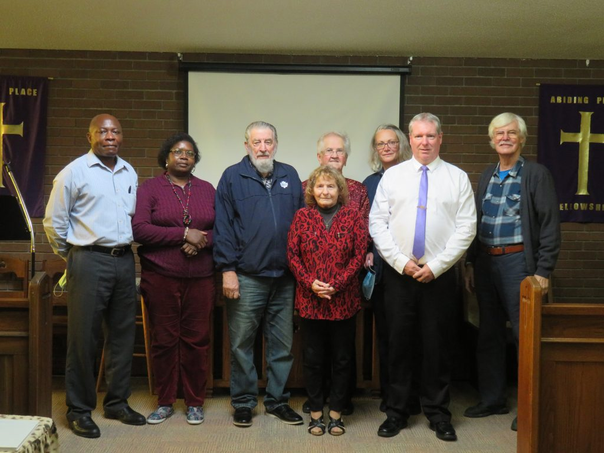

Our Story and Vision
Abiding Place Ministries was formed in 2004, and its first fellowship in Shelburne began in December of that year. The vision is to cultivate an interactive church where people abide in Christ, share their God-given gifts and grow in character, healing and wholeness through sound Biblical teaching and the work of Holy Spirit.
Abiding Place describes itself as a Spirit-filled, Bible-believing and interdenominational fellowship. People from different Christian traditions gather around a shared desire to know Jesus Christ, love one another and serve Shelburne and the surrounding region.
The ministry is affiliated with the Evangelical Christian Church in Canada and has published long-standing relationships with Jehovah Jireh Christian Ministries, Singing Waters Ministries, Unstoppable Blessing Ministries and other Christian partners.
Leadership and Community Service
Rev. Gord and Kate Horsley
Founding Pastor and Ministry Partner
The church’s official history says Gord and Kate have served in Christian ministry for more than 30 years, including missions, youth ministry, prayer counselling, church planting, worship and intercession. Rev. Gord is the Senior Pastor and founder of Abiding Place Ministries.

Leadership Team
Serving the Fellowship
Abiding Place’s published leadership description emphasizes a team drawn from different backgrounds, cultures and vocations, serving the fellowship with humility, love and dependence on Holy Spirit. Individual titles should be confirmed directly with the church.
Community Ministry
Veterans, Seniors and Shelburne
The ministry’s public record includes service with Royal Canadian Legion Branch 220, pastoral care and devotions at Dufferin Oaks, participation in the Shelburne Ministerial and support for community worship and outreach.
Our Statement of Faith
The following is a carefully edited presentation of the ten beliefs published by Abiding Place Fellowship.
The Bible
We believe the Bible to be the inspired, infallible and authoritative Word of God.
The Triune God
We believe there is one God, eternally manifested as Father, Son and Holy Spirit.
Jesus Christ
We believe in the virgin birth of Jesus Christ, His atoning sacrifice through His shed blood, His bodily resurrection, His ascension and His personal return in power and glory.
Salvation
We believe regeneration and conversion through faith in Jesus Christ are essential for the salvation of lost and sinful humanity.
Water Baptism
We believe water baptism is not a saving ordinance, but is an essential act of obedience to the Gospel and should be administered by immersion.
Life in Holy Spirit
We believe the Gospel includes holiness of heart and life, healing of the body and a personal experience with Holy Spirit through which the gifts of the Spirit become active in believers of every age.
Resurrection and Judgment
We believe in the bodily resurrection of believers and in the final judgment of all humanity.
Unity of Believers
We believe in the spiritual unity of all believers in our Lord Jesus Christ.
Spiritual Gifts and Ministry
We believe in the gifts of Holy Spirit and the five-fold ministry given to equip the saints and build up the body of Christ.
Marriage
We believe marriage is holy and ordained by God as a covenant union of one man and one woman.
Questions About Our Faith or Fellowship?
Contact the church directly to ask about its current leadership, membership, baptism, pastoral care or weekly gatherings.
Contact Us